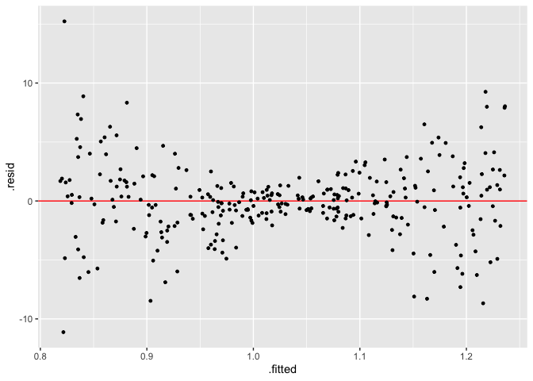

The goal of visage is to provide an lightweight OOP system and a set of tools for running visual inference experiments.
Installation
And the development version from GitHub with:
# install.packages("devtools")
devtools::install_github("TengMCing/visage")1. Visual inference cubic linear model class
CUBIC_MODEL
1.1. Define a model
A visual inference cubic linear model is defined as:
CUBIC_MODEL$formula
#> y ~ 1 + (2 - c) * x + c * z + a * (((2 - c) * x)^2 + (c * z)^2) +
#> b * (((2 - c) * x)^3 + (c * z)^3) + ewhere x and z are random variables,
a, b and c are parameters and
e is the random error term.
cubic_model() is a cubic model class constructor, which
takes arguments a, b, c,
sigma, x and z, where the first
four are numeric values defined above, and x and
z are random variable instances created by the random
variable abstract base class constructor rand_var(). If we
would like x and z to be uniform random
variables ranged from −1 to 1, it can be achieved by using the uniform
random variable class constructor rand_uniform(). It only
takes two arguments which are the lower bound and the upper bound of the
support.
mod <- cubic_model(a = -3, b = -3, c = 1, sigma = 1,
x = rand_uniform(-1, 1), z = rand_uniform(-1, 1))
mod
#>
#> ── <CUBIC_MODEL object>
#> y = 1 + (2 - c) * x + c * z + a * (((2 - c) * x)^2 + (c * z)^2) + b * (((2 - c) * x)^3 + (c * z)^3) + e
#> - x: <RAND_UNIFORM object>
#> [a: -1, b: 1]
#> - z: <RAND_UNIFORM object>
#> [a: -1, b: 1]
#> - e: <RAND_NORMAL object>
#> [mu: 0, sigma: 1]
#> - a: -3
#> - b: -3
#> - c: 1
#> - sigma: 11.2. Generate random values from the model
An instance of cubic model class contains methods of simulating data
and making residual plot. Method gen() returns a data frame
containing realizations of x, z,
y and e simulated from the model. The number
of realizations depends on the integer argument n. In
addition, a null model will be fitted using the simulated data and
residuals and fitted values will be included in the returned data
frame.
The null model is defined as:
CUBIC_MODEL$null_formula
#> y ~ x + zGenerates five realizations from the model:
mod$gen(n = 5)
#> y x z e .resid .fitted
#> 1 0.0998128 -0.9479568 0.130351918 0.11533877 0.2472736 -0.1474608
#> 2 -2.1813283 -0.7262078 0.663138763 -0.49097264 -0.1923048 -1.9890235
#> 3 -2.3693421 0.4971025 0.819353834 0.08827133 0.1100229 -2.4793650
#> 4 0.6705721 0.4449530 0.019039433 0.06591719 0.3716396 0.2989326
#> 5 -0.1931103 0.2335000 0.003598855 -1.22841058 -0.5366312 0.34352091.3. Make a residual plot
Method plot() produce a ggplot object. It
takes a data frame containing columns .resid and
.fitted as input, along with a character argument type
indicating the type of the data plot, and other aesthetic arguments such
as size and alpha to control the appearance of the plot.
mod$plot(mod$gen(n = 100), type = "resid", size = 1)
1.4. Make a lineup
A lineup is a matrix of residual plots which can be produced by using
the methods gen_lineup() and plot_lineup().
Method gen_lineup() takes the number of realizations
n and the number of plots in a lineup k as
inputs. Other than that, the method plot_lineup() has the
same user interface as plot().
Generate a lineup consists of 2 plots and 8 realizations:
mod$gen_lineup(n = 8, k = 2)
#> y x z e .resid .fitted
#> 1 -7.22036473 0.9727343 0.8132524 -0.80873318 -2.0569324 -5.163432287
#> 2 0.56868822 -0.3452510 0.1518039 0.07589807 0.5719140 -0.003225822
#> 3 0.32740792 -0.2190150 0.4849387 0.22148930 1.3715313 -1.044123345
#> 4 -1.71440403 0.7885688 0.1559739 -0.23796457 1.5834243 -3.297828370
#> 5 -3.22895677 0.6628870 0.6743910 -1.08956652 0.7550708 -3.984027527
#> 6 -1.21733564 -0.3820342 -0.5516978 -0.60367731 -2.7462169 1.528881275
#> 7 1.54404598 0.1414332 -0.7150013 1.62320854 1.2014314 0.342614608
#> 8 -4.84085770 0.6902862 0.7223587 -2.14107246 -0.6802224 -4.160635292
#> 9 -2.62552598 0.9727343 0.8132524 -0.80873318 2.5379063 -5.163432287
#> 10 0.58418868 -0.3452510 0.1518039 0.07589807 0.5874145 -0.003225822
#> 11 -1.29286199 -0.2190150 0.4849387 0.22148930 -0.2487386 -1.044123345
#> 12 -3.64570189 0.7885688 0.1559739 -0.23796457 -0.3478735 -3.297828370
#> 13 -3.28404664 0.6628870 0.6743910 -1.08956652 0.6999809 -3.984027527
#> 14 1.93220080 -0.3820342 -0.5516978 -0.60367731 0.4033195 1.528881275
#> 15 0.06723829 0.1414332 -0.7150013 1.62320854 -0.2753763 0.342614608
#> 16 -7.51726803 0.6902862 0.7223587 -2.14107246 -3.3566327 -4.160635292
#> test_name statistic p_value k null
#> 1 F-test 13.889523 0.1982790 1 FALSE
#> 2 F-test 13.889523 0.1982790 1 FALSE
#> 3 F-test 13.889523 0.1982790 1 FALSE
#> 4 F-test 13.889523 0.1982790 1 FALSE
#> 5 F-test 13.889523 0.1982790 1 FALSE
#> 6 F-test 13.889523 0.1982790 1 FALSE
#> 7 F-test 13.889523 0.1982790 1 FALSE
#> 8 F-test 13.889523 0.1982790 1 FALSE
#> 9 F-test 1.064186 0.6127482 2 TRUE
#> 10 F-test 1.064186 0.6127482 2 TRUE
#> 11 F-test 1.064186 0.6127482 2 TRUE
#> 12 F-test 1.064186 0.6127482 2 TRUE
#> 13 F-test 1.064186 0.6127482 2 TRUE
#> 14 F-test 1.064186 0.6127482 2 TRUE
#> 15 F-test 1.064186 0.6127482 2 TRUE
#> 16 F-test 1.064186 0.6127482 2 TRUEPlot a lineup consists of 20 plots and 300 realizations:
mod$plot_lineup(mod$gen_lineup(n = 300, k = 20), type = "resid", alpha = 0.6)
2. Visual inference heteroskedasticity linear model class
HETER_MODEL
A visual inference heteroskedasticity linear model is defined as:
HETER_MODEL$formula
#> y ~ 1 + x + sqrt(1 + (2 - abs(a)) * (x - a)^2 * b) * ewhere x is random variables, a,
b are parameters and e is the random error
term.
Similar to the cubic model, the heteroskedasticity model could be
built by the heteroskedasticity model class constructor
heter_model(). This function takes three arguments as
inputs, which are a, b and x.
a and b are numeric parameters defined above.
x needs to be a random variable object.
mod <- heter_model(a = 0, b = 16, x = rand_uniform(-1, 1))
mod
#>
#> ── <HETER_MODEL object>
#> y = 1 + x + sqrt(1 + (2 - abs(a)) * (x - a)^2 * b) * e
#> - x: <RAND_UNIFORM object>
#> [a: -1, b: 1]
#> - e: <RAND_NORMAL object>
#> [mu: 0, sigma: 1]
#> - a: 0
#> - b: 16Since both the cubic model class CUBIC_MODEL and the
heteroskedasticity model class HETER_MODEL are inherited
from the visual inference model class VI_MODEL,
heteroskedasticity model object can be used in a similar way as cubic
model object. The following codes give examples of the use of the
object.
mod$gen(n = 5)
#> y x e .resid .fitted
#> 1 -3.3862752 -0.5277706 -1.22548797 -2.06408798 -1.32218721
#> 2 1.8498922 -0.1482912 0.76474246 1.94090163 -0.09100943
#> 3 1.3707397 0.7666877 -0.08896042 -1.50679574 2.87753541
#> 4 -0.8919075 -0.3836138 -0.63125061 -0.03742046 -0.85448700
#> 5 2.7177862 0.2035144 0.99301758 1.66740254 1.05038368
mod$plot(mod$gen(n = 300), type = "resid", size = 1)
mod$plot_lineup(mod$gen_lineup(n = 300), alpha = 0.6)